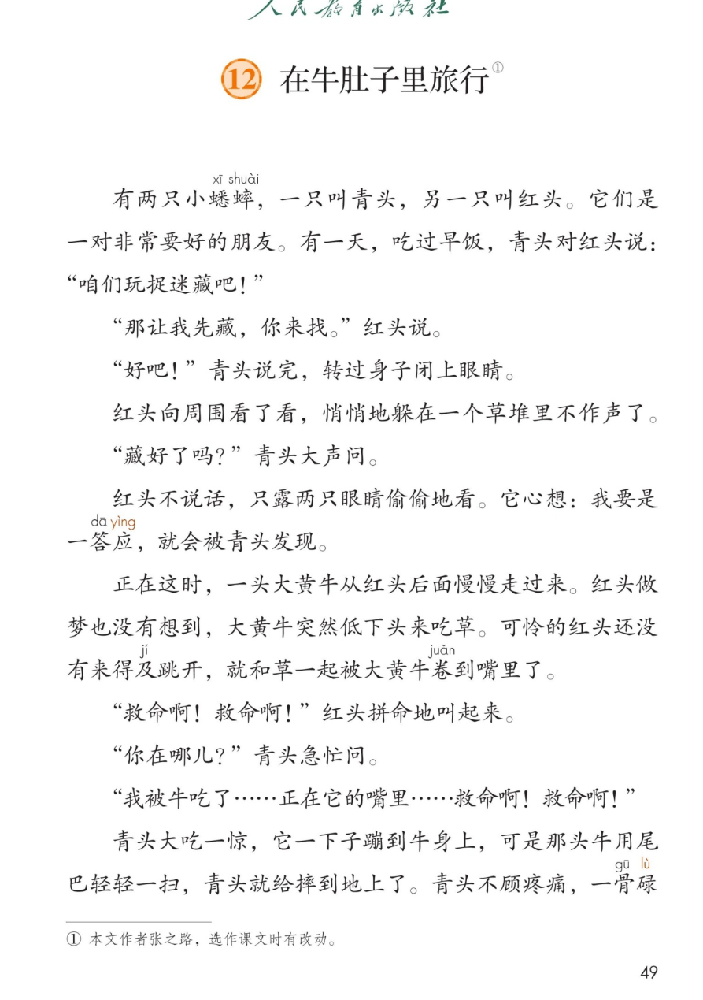
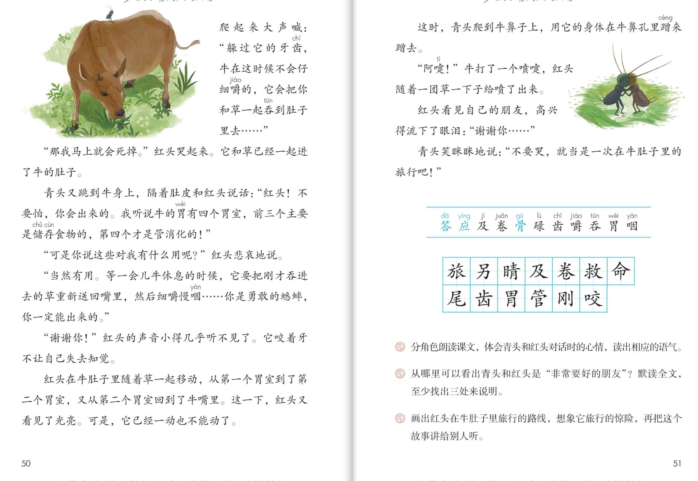

×
🔊 手机听不到声音怎么办？
① 先把手机
媒体音量调大 ，确认没开静音、没连蓝牙耳机；在微信里打开的，点右上角「⋯ → 用浏览器打开」。
② 还是没声音？到应用商店免费下载
Microsoft Edge 浏览器 （它自带朗读发声），用它打开本页面就能出声。
③ 换了 Edge 仍然没声音，说明这部手机的
硬件/系统不支持 网页朗读（多为老旧机型）；近几年买的新手机一般都能正常播放。
→ 打开声音自检
🦗 第 12 课《在牛肚子里旅行》· 有声图文带读
统编版语文 · 第四单元·阅读 · 课本 P49~51 · 作者：张之路 · 素养升级版（对标 2022 课标第二学段）
课文 21 个自然段
素养目标 4
会认字 11
会写字 13
听写词 12
童话探究 6 卡
深入理解 8 题
本课本领 读对话·讲出旅行路线
🎧 这样学（可随时点任意一句、一个字、一个词单独听）： ① 听读课文 ——一句一句读，读到哪一句哪一句发光；边读边想红头的旅行路线。② 学字词 ——11 个会认字、13 个会写字，点一个读一个（应、骨、咽是多音字）。③ 词语·听写 ——听写 12 个课文词（读两遍→你写→报答案→听示范句），再听 4 组近义词辨析。④ 深入理解 ——8 道题（认知 / 理解 / 运用 / 拓展），先想后看。⑤ 分角色朗读 ——旁白、青头、红头、小科学家，读出心情的变化。🌟 本单元任务：感受童话丰富的想象，体会其中的真善美——再试着自己编童话、写童话！
📌 本单元语文要素 ——单元导语（P45 照录）：乘着想象的翅膀，游历奇妙的童话王国，看花儿跳舞，听星星歌唱 ；要点：感受童话丰富的想象，体会其中的真善美 ；试着自己编童话、写童话 。本课读的是一篇科学童话 。
🀄 文化自信
🀄 文化自信
读中国作家张之路的科学童话，体会中国童话把科学知识装进故事的巧妙。
🗣 语言运用
🗣 语言运用
认识 11 个生字，会写 13 个字；积累“急忙、悲哀、细嚼慢咽”等词语，读好“一……就……”句式。
💡 思维能力
💡 思维能力
理清红头旅行的路线，体会青头和红头对话时的心情，发现故事里藏着的牛胃知识。
🎨 审美创造
🎨 审美创造
分角色读出人物语气，把旅行路线画下来、把故事讲给别人听，感受友谊的温暖。
点段前的 ①②③ 听整段
🔁 跟读模式：关
👁 隐藏注音（自测用）
字卡上的拼音标的是本课要认的字，读音来自课本生字表
🎤 朗读要求（老师标准） 不添字、不漏字 ；不出声、不指读 ，一边读一边画旅行路线 ；惊慌害怕 ，青头的话读得坚定镇定 ，读到省略号 时停一停、喘口气；慢、清楚 。
🤫 默读小提示（边默读边画路线） 听读 ——点句子听老师读；第二步 默读 ——不出声、不指读，一边读一边画红头的旅行路线 ：牛嘴 → 第一个胃室 → 第二个胃室 → 回到牛嘴；第三步 朗读 ——分角色读出心情的变化 。
①
有两只小蟋蟀，一只叫青头，另一只叫红头。
它们是一对非常要好的朋友。
有一天，吃过早饭，青头对红头说：“咱们玩捉迷藏吧！”
📌 这一段讲：两只小蟋蟀青头和红头是非常要好的朋友，青头提议玩捉迷藏。
②
“那我先藏，你来找。”红头说。
📌 这一段讲：红头说：那我先藏，你来找。
③
“好吧！”青头说完，转过身子闭上眼睛。
📌 这一段讲：青头爽快答应，转过身子闭上眼睛。
④
红头向周围看了看，悄悄地躲在一个草堆里不作声了。
📌 这一段讲：红头悄悄躲进草堆，不作声了。
⑤
“藏好了吗？”青头大声问。
📌 这一段讲：青头大声问：藏好了吗。
⑥
红头不说话，只露两只眼睛偷偷地看。
它心想：我要是一答应，就会被青头发现。
📌 这一段讲：红头只露眼睛偷偷看，心想一答应就会被发现。
⑦
正在这时，一头大黄牛从红头后面慢慢走过来。
红头做梦也没有想到，大黄牛突然低下头来吃草。
可怜的红头还没有来得及跳开，就和草一起被大黄牛卷到嘴里了。
📌 这一段讲：大黄牛突然低头吃草，红头来不及跳开，被卷到牛嘴里了。
⑧
“救命啊！救命啊！”红头拼命地叫起来。
📌 这一段讲：红头拼命地叫起来：救命啊！救命啊！
⑨
“你在哪儿？”青头急忙问。
📌 这一段讲：青头急忙问：你在哪儿。
⑩
“我被牛吃了……正在它的嘴里……救命啊！救命啊！”
📌 这一段讲：红头喊：我被牛吃了，正在它的嘴里，救命啊。
⑪
青头大吃一惊，它一下子蹦到牛身上，可是那头牛用尾巴轻轻一扫，青头就给摔到地上了。
青头不顾疼痛，一骨碌爬起来大声喊：“躲过它的牙齿，牛在这时候不会仔细嚼的，它会把你和草一起吞到肚子里去……”
📌 这一段讲：青头大吃一惊，蹦到牛身上被摔到地上，不顾疼痛爬起来喊出救命的知识。
⑫
“那我马上就会死掉。”红头哭起来。
它和草已经一起进了牛的肚子。
📌 这一段讲：红头哭起来：那我马上就会死掉——它已经进了牛肚子。
⑬
青头又跳到牛身上，隔着肚皮和红头说话：“红头！不要怕，你会出来的。
我听说牛胃里有四个胃室，前三个主要是储存食物的，第四个才是管消化的！”
📌 这一段讲：青头又跳到牛身上鼓励红头：牛胃有四个胃室，前三个储存食物，第四个管消化。
⑭
“可是你说这些对我有什么用呢？”红头悲哀地说。
📌 这一段讲：红头悲哀地说：可是你说这些对我有什么用呢。
⑮
“当然有用。等一会儿牛休息的时候，它要把刚才吞进去的草重新送回嘴里，然后细嚼慢咽……你是勇敢的蟋蟀，你一定能出来的。”
📌 这一段讲：青头说当然有用：牛休息时会把草送回嘴里细嚼慢咽，你是勇敢的蟋蟀，一定能出来。
⑯
“谢谢你！”红头的声音小得几乎听不见了。
它咬着牙不让自己失去知觉。
📌 这一段讲：红头道谢，声音小得几乎听不见，咬着牙不让自己失去知觉。
⑰
红头在牛肚子里随着草一起移动，从第一个胃室到了第二个胃室，又从第二个胃室回到了牛嘴里。
这一下，红头又看见了光亮。
可是，它已经一动也不能动了。
📌 这一段讲：红头从第一个胃室到第二个胃室，又回到牛嘴看见光亮，可它一动也不能动了。
⑱
这时，青头爬到牛鼻子上，用它的身体在牛鼻孔里蹭来蹭去。
📌 这一段讲：青头爬到牛鼻子上，在牛鼻孔里蹭来蹭去。
⑲
“阿嚏！”牛打了一个喷嚏，红头随着一团草一下子给喷了出来。
📌 这一段讲：牛打了一个喷嚏，红头随着一团草一下子给喷了出来。
⑳
红头看见自己的朋友，高兴得流下了眼泪：“谢谢你……”
📌 这一段讲：红头高兴得流下了眼泪，说：谢谢你。
㉑
青头笑眯眯地说：“不要哭，就当是一次在牛肚子里的旅行吧！”
📌 这一段讲：青头笑眯眯地说：不要哭，就当是一次在牛肚子里的旅行吧！
🤔 想一想（点我可跳过）
双页宽图自动占整行

第 49 页 · 课文（一）

第 50~51 页 · 课文（二）· 认字 · 写字 · 课后练习
📖 人教版《语文》三年级上册 · 课本第 49~51 页 · 图片仅供个人学习，版权归人民教育出版社所有
📚 注释① 本文作者张之路 ，选作课文时有改动。科学童话 ：故事里还藏着牛胃的科学知识呢。
点一个字，听读音、词语和在课文里的句子；应、骨、咽是多音字
结构、部首、笔画与书写提示为通用规范，供参考，以教材和老师的指导为准
旅lǚ
旅行
左右 · 方 · 10画
方字旁要窄，横折钩挺直，右下部分别写成水字。
另lìng
另一只
上下 · 口 · 5画
上面口字写小，下面力字撇舒展，横折钩有力。
睛jīng
两只眼睛
左右 · 目 · 13画
目字旁窄长，右边青字上横长，月字底撇变竖。
及jí
来得及
独体 · 丿 · 3画
先写撇，再写横折折撇，最后一捺要舒展。
卷juǎn
卷到嘴里
上下 · 㔾 · 8画
上面撇捺舒展盖住下面，底下是㔾，别写成卩。
救jiù
救命
左右 · 攵 · 11画
左边求字四笔紧凑，右边反文旁撇、横、撇、捺要清楚。
命mìng
救命
上下 · 人 · 8画
人字头撇捺舒展，中间一横短，下面口字写扁。
尾wěi
尾巴
半包围 · 尸 · 7画
尸字头上不封口，下面毛字竖弯钩要托稳。
齿chǐ
牙齿
上下 · 止 · 8画
上面止字写扁，下面凵里笔画均匀，最后写竖折收底。
胃wèi
牛胃
上下 · 田 · 9画
上面田字写扁宽，竖画对正，下面月字瘦长，撇变竖。
管guǎn
管消化
上下 · 竹 · 14画
竹字头左右均匀，下面官字宝盖写宽，上部要盖住下部。
刚gāng
刚才
左右 · 刂 · 6画
左边冈字框里一点别丢，右边竖刀旁短竖加竖钩要挺直。
咬yǎo
咬着牙
左右 · 口 · 9画
口字旁小而偏上，右边交字撇点收住，下撇要短。
点一行，听读这一组词语
胃 肠胃 胃口 胃室
应 答应 应该 一声不吭
卷 卷到嘴里 卷起 卷动
咽 细嚼慢咽 吞咽 咽喉
读两遍 → 你在纸上写 → 报答案 → 听示范句
准备听写 · 共 12 个词
○ ○ ○
点下面的「开始听写」，听到一个词就写一个词。
▶ 开始听写
🔁 再读一遍
👁 看答案
点词听读，点句子听示范句，再自己说一句
1 旅行 课文词
示范句：红头在牛肚子里做了一次旅行。
✏️ 我也能说：谁旅行。
2 另外 课文词
示范句：一只叫青头，另一只叫红头。
✏️ 我也能说：另一只叫什么。
3 眼睛 课文词
示范句：红头只露两只眼睛偷偷地看。
✏️ 我也能说：谁偷偷地看。
4 刚才 课文词
示范句：它要把刚才吞进去的草重新送回嘴里。
✏️ 我也能说：把什么送回嘴里。
5 卷起 课文词
示范句：红头和草一起被大黄牛卷到嘴里了。
✏️ 我也能说：谁被卷到嘴里了。
6 救命 课文词
示范句：救命啊！救命啊！红头拼命地叫起来。
✏️ 我也能说：谁在喊救命。
7 生命 课文词
示范句：红头咬着牙不让自己失去知觉，保住了生命。
✏️ 我也能说：谁保住了生命。
8 尾巴 课文词
示范句：那头牛用尾巴轻轻一扫，青头就给摔到地上了。
✏️ 我也能说：牛的尾巴一扫怎么样。
9 牙齿 课文词
示范句：躲过它的牙齿，牛在这时候不会仔细嚼的。
✏️ 我也能说：躲过什么。
10 肠胃 课文词
示范句：牛胃里有四个胃室，前三个主要是储存食物的。
✏️ 我也能说：牛胃里有几个胃室。
11 管理 课文词
示范句：第四个胃室才是管消化的。
✏️ 我也能说：第四个胃室管什么。
12 咬住 课文词
示范句：它咬着牙不让自己失去知觉。
✏️ 我也能说：谁咬着牙。
相同点 / 不一样在哪 / 各造一句
急忙 — 连忙
相同：都表示动作快、心里急。
不一样：急忙 偏重心里着急赶着做；连忙 偏重紧接着马上去做。
急忙：青头急忙问，你在哪儿。
悲哀 — 悲伤
相同：都表示心里难过。
不一样：悲哀 偏重心里绝望、难过极了；悲伤 偏重伤心难过。
悲哀：红头悲哀地说，这对我有什么用呢。
悄悄 — 偷偷
相同：都表示不让人知道、不出声。
不一样：悄悄 偏重声音小、不惊动别人；偷偷 偏重背着人、不让人发现。
悄悄：红头悄悄地躲在草堆里。
勇敢 — 勇气
相同：都和不怕困难有关。
不一样：勇敢 是不怕危险和困难的品质；勇气 是敢做敢为的劲头。
勇敢：你是勇敢的蟋蟀，你一定能出来的。
心情变化 拼命地叫 悲哀地说 高兴得流下了眼泪
动作连用 蹦到牛身上 跳到牛身上 爬到牛鼻子上
一……就…… 一答应就会被发现 一下子蹦到 一骨碌爬起来
拟声与感叹 阿嚏！ 救命啊！ 救命啊！——读出惊险
点一张卡，听这条线索
单元导语说：乘着想象的翅膀 ，游历奇妙的童话王国。这篇童话很特别——它把科学知识 装进了惊险的故事里。六张卡片，找一找它藏着什么。
💬 对话推进的故事
整篇课文几乎都是青头和红头的对话——故事一句一句“说”出来，读对话就像看戏。
🐄 藏在故事里的科学
牛有四个胃室，前三个储存食物，第四个管消化；牛休息时还会把草送回嘴里细嚼慢咽——知识全藏在故事里。
😱 一波三折的惊险
被卷进牛嘴、掉进胃室、一动也不能动——情节一个接一个，让人揪心。
❤️ 心情的变化线
红头从拼命呼救到悲哀绝望，再到高兴得流下眼泪；青头从大吃一惊到镇定想办法——心情线是朗读的指南针。
🦸 勇敢与友谊
青头不顾疼痛一骨碌爬起来想办法，红头咬着牙不让自己失去知觉——这是“非常要好的朋友”的模样。
✨ 题目的巧思
结尾一句“就当是一次在牛肚子里的旅行吧”——课文题目就是从这里来的，苦难被朋友的一句话变成了“旅行”。
标「答案不唯一」的题，说得有道理都对
认知 课文讲了一件什么事？看解析
🤔 想一想
解析：
蟋蟀红头玩捉迷藏时被大黄牛卷进嘴里，朋友青头一边安慰鼓励，一边用牛胃的知识帮它想办法，最后青头让牛打喷嚏把红头喷了出来。
🌈 答案不唯一，说得有道理都对
认知 红头是怎么被卷进牛嘴里的？看解析
🤔 想一想
解析：
一头大黄牛突然低下头来吃草，红头还没有来得及跳开，就和草一起被大黄牛卷到嘴里了。
🌈 答案不唯一，说得有道理都对
理解 牛胃里的四个胃室各管什么？青头是怎么知道的？看解析
🤔 想一想
解析：
前三个胃室主要储存食物，第四个才管消化；牛休息时还会把草送回嘴里细嚼慢咽。青头说“我听说”——它是从平时听来的知识里想到的。
🌈 答案不唯一，说得有道理都对
理解 红头在牛肚子里旅行的路线是怎样的？（课后题③照录：画出路线）看解析
🤔 想一想
解析：
牛嘴 → 和草一起被吞进牛肚子 → 第一个胃室 → 第二个胃室 → 又回到牛嘴里 → 青头让牛打喷嚏，随着一团草喷了出来。
🌈 答案不唯一，说得有道理都对
理解 从哪里可以看出青头和红头是“非常要好的朋友”？至少找出三处来说明。（课后题②照录）看解析
🤔 想一想
解析：
示例：①青头大吃一惊，一下子蹦到牛身上，摔到地上也不顾疼痛，一骨碌爬起来想办法；②青头一直隔着肚皮鼓励红头“不要怕，你会出来的”“你是勇敢的蟋蟀”；③红头脱险后高兴得流下了眼泪说“谢谢你……”。🌈 答案不唯一，找出三处、说清理由都对。
🌈 答案不唯一，说得有道理都对
运用 分角色朗读课文，体会青头和红头对话时的心情，读出相应的语气。（课后题①照录）看解析
🤔 想一想
解析：
示范：红头在牛嘴里“救命啊！救命啊！”要读出拼命和惊慌；青头“不要怕，你会出来的”要读得坚定；红头悲哀地问话要读出失望；结尾“谢谢你……”要读出喜极而泣、说不尽的感激。
🌈 答案不唯一，说得有道理都对
运用 青头救红头的过程中，哪些地方让你佩服？看解析
🤔 想一想
解析：
示例：被牛尾巴摔到地上也不顾疼痛，马上爬起来喊话；懂得牛胃的知识，会想办法；爬到牛鼻子上蹭来蹭去，让牛打喷嚏救出红头——又勇敢又聪明。🌈 答案不唯一。
🌈 答案不唯一，说得有道理都对
拓展 把这个故事讲给别人听，你会怎么讲？（课后题③照录）看解析
🤔 想一想
解析：
提示：先按“捉迷藏→被卷进牛嘴→胃室旅行→回到牛嘴→打喷嚏救出”的路线讲清楚，再讲出心情的变化，讲到惊险的地方可以停一停。🌈 讲法不唯一。
🌈 答案不唯一，说得有道理都对
💬 想象支架：先 草堆捉迷藏 → 再 被卷进牛嘴 → 接着 胃室里的旅行 → 然后 回到牛嘴看见光亮 → 最后 喷嚏救出朋友。轮到你了：把这条路线画下来，讲给别人听。
点一个角色，听他（她）的台词
🎭 旁白
有两只小蟋蟀，一只叫青头，另一只叫红头。它们是一对非常要好的朋友。有一天，吃过早饭，青头对红头说，咱们玩捉迷藏吧！ / 正在这时，一头大黄牛从红头后面慢慢走过来。红头做梦也没有想到，大黄牛突然低下头来吃草。
💬 要读出人物语气 ：红头惊慌害怕，青头坚定镇定
🎭 青头
藏好了吗？你在哪儿？ / 躲过它的牙齿，牛在这时候不会仔细嚼的，它会把你和草一起吞到肚子里去…… / 红头！不要怕，你会出来的。我听说牛胃里有四个胃室，前三个主要是储存食物的，第四个才是管消化的！ / 你是勇敢的蟋蟀，你一定能出来的。
💬 要读出人物语气 ：红头惊慌害怕，青头坚定镇定
🎭 红头
救命啊！救命啊！我被牛吃了……正在它的嘴里……救命啊！救命啊！ / 那我马上就会死掉。可是你说这些对我有什么用呢？ / 谢谢你……青头笑眯眯地说，不要哭，就当是一次在牛肚子里的旅行吧！
💬 要读出人物语气 ：红头惊慌害怕，青头坚定镇定
🎭 小科学家·牛胃知识
牛胃里有四个胃室，前三个主要是储存食物的，第四个才是管消化的。 / 牛休息的时候，要把刚才吞进去的草重新送回嘴里，然后细嚼慢咽——这就叫反刍。
💬 要读出人物语气 ：红头惊慌害怕，青头坚定镇定
🎭 朗读员·旅行路线
牛嘴，第一个胃室，第二个胃室，又回到牛嘴，随着一团草喷了出来——这就是红头在牛肚子里的旅行路线。 / 把这个故事讲给别人听：先讲清路线，再讲出心情的变化。
💬 要读出人物语气 ：红头惊慌害怕，青头坚定镇定
每题给自己打 1~3 颗星
1. 我能正确认读 11 个会认字，规范书写 13 个会写字。 ☆ ☆ ☆
2. 我能按顺序说出红头在牛肚子里的旅行路线。 ☆ ☆ ☆
3. 我能从课文中找出三处“非常要好的朋友”的证据。 ☆ ☆ ☆
4. 我能分角色读出青头和红头对话时的心情变化。 ☆ ☆ ☆
5. 我能把这个故事讲给别人听，讲清路线和惊险之处。 ☆ ☆ ☆
✍️ 小练笔 ：画出红头在牛肚子里旅行的路线 ，想象它旅行的惊险（课后题③照录）。编一个把知识藏进故事的小童话 ：比如一只小蚂蚁迷路了，是谁用什么知识帮它回了家？惊险 ，知识要准确 ，朋友要热心 ——这就是科学童话的三样宝贝。